Trabajamos juntos por los niños con amor y dedicación
Somos una comunidad educativa especializada que acompaña a niñas, niños y jóvenes para que descubran su potencial, ganen autonomía y construyan su propio camino.
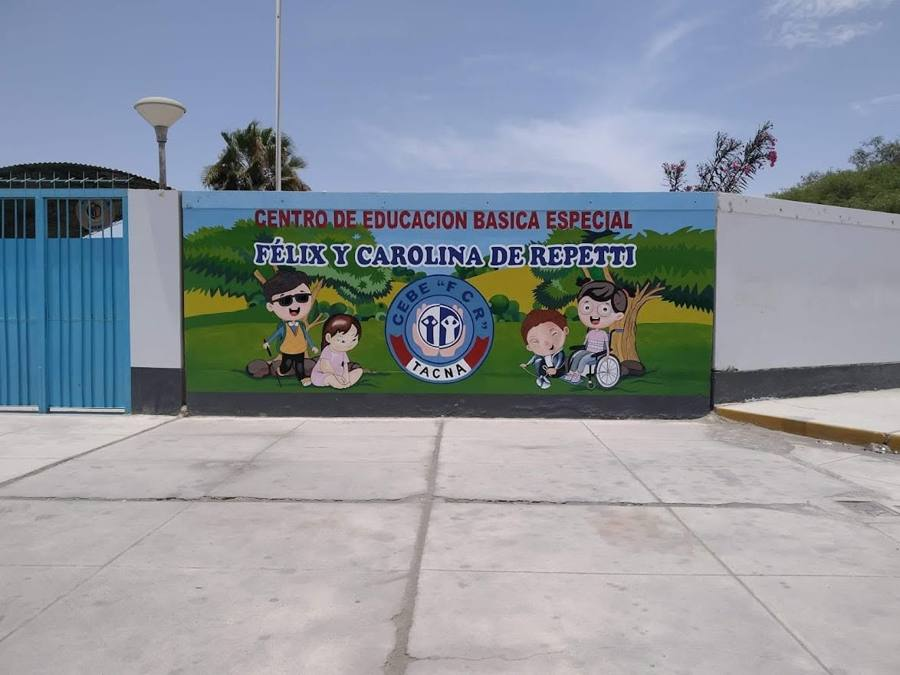
¡Estamos de aniversario! 60 años
Celebramos seis décadas de compromiso y servicio a nuestra comunidad. Conoce las actividades.
¿Qué encontrarás aquí?
Familias y escuela, juntas
¿Desea información para matricular a su hijo o hija? Comuníquese con secretaría, de 8:00 a. m. a 2:00 p. m., al 052-285707.
ContáctenosQuiénes somos
Presentación
El CEBE ofrece servicios de la modalidad de Educación Básica Especial a estudiantes que requieren apoyos educativos especializados. Su labor comprende el desarrollo de capacidades, la atención de las necesidades individuales de aprendizaje y el acompañamiento educativo, en coordinación con las familias y los profesionales de la institución.
Reseña histórica
Fue creado mediante la Resolución Suprema N° 1404, emitida el 25 de noviembre de 1966, con el objetivo de brindar asistencia educativa especializada a niñas, niños y jóvenes con discapacidad severa, multidiscapacidad o condiciones como retardo mental y problemas de psicomotricidad.
Misión
“Lograr que todas y todos los estudiantes con discapacidad severa y multidiscapacidad en los niveles de Inicial y primaria del CEBE “Félix y Carolina de Repetti”, así como estudiantes incluidos en todos los niveles y modalidades del Sistema educativo, culminen la escolaridad y el desarrollo de sus habilidades funcionales, comunicativas, sociales y habilidades básicas para su desarrollo integral en espacios seguros, acogedores de sana convivencia y libres de violencia, para su inclusión familiar, social, laboral y escolar”
Visión
“Al 2027 nuestra Institución “Félix y Carolina de Repetti” será reconocida como el Centro que contribuye a que todos nuestros estudiantes con discapacidad severa y multidiscapacidad, desarrollen sus habilidades desde la primera infancia y logren su inclusión familiar, social, laboral y escolar dentro de una familia comprometida que practiquen valores y respeten sus derechos y contribuyan al desarrollo de Tacna en concordancia con el perfil de egreso del CNEB”
Datos generales
Modalidad: Educación Básica Especial
Aniversario institucional: 25 de noviembre
Código de local escolar: 488388
Código modular, nivel Inicial: 1738467
Código modular, nivel Primaria: 0309161
Código modular, PRITE: 1801489
Ubicación: departamento y provincia de Tacna, distrito de Pocollay.
Sede: Av. Industrial S/N y calle Carolina Repetti S/N.
Dirección
Equipo y servicios de apoyo
Equipo SAANEE
7 docentes. Coordinadora: Wilma Esther Maquera Tapia.
Psicología
2 profesionales.
Trabajo social
1 profesional.
Terapia física
1 profesional.
Consulta los nombres en el directorio y conoce el equipo interdisciplinario.
Normas de convivencia
Las ocho normas que practicamos en el CEBE, con ilustraciones de cada una. Toca una imagen para verla más grande.
1. Asistimos con puntualidad y respetamos los horarios.
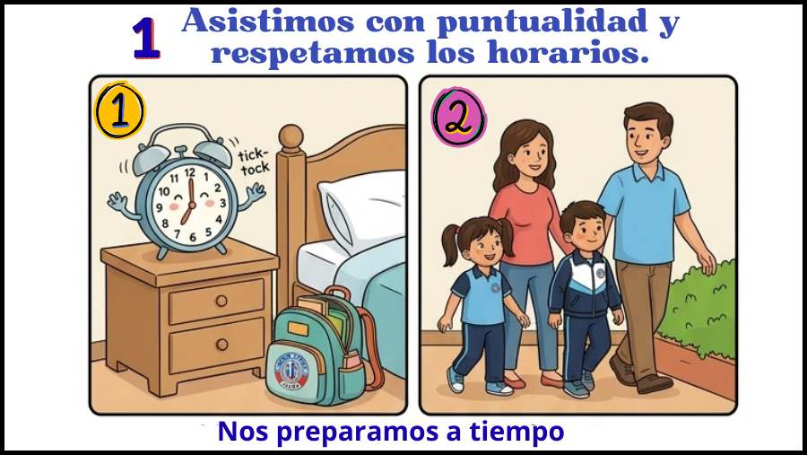
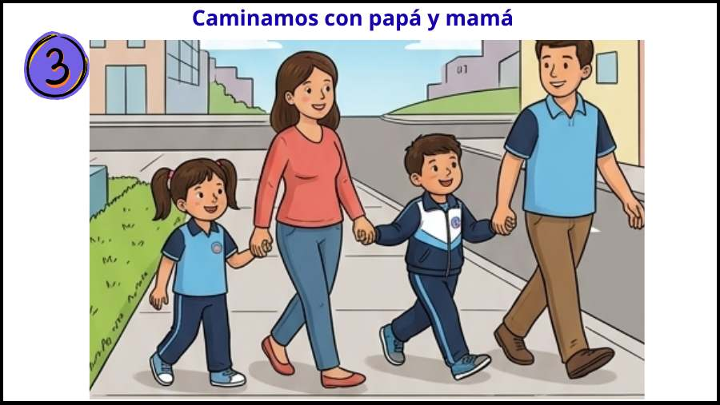
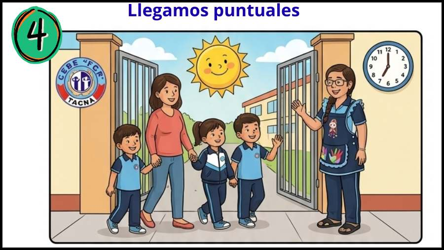
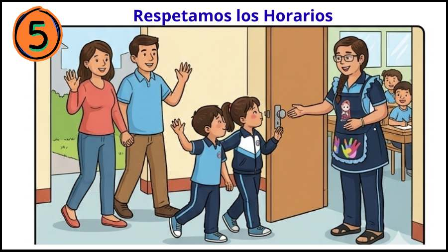
2. Nos tratamos con respeto y cordialidad.
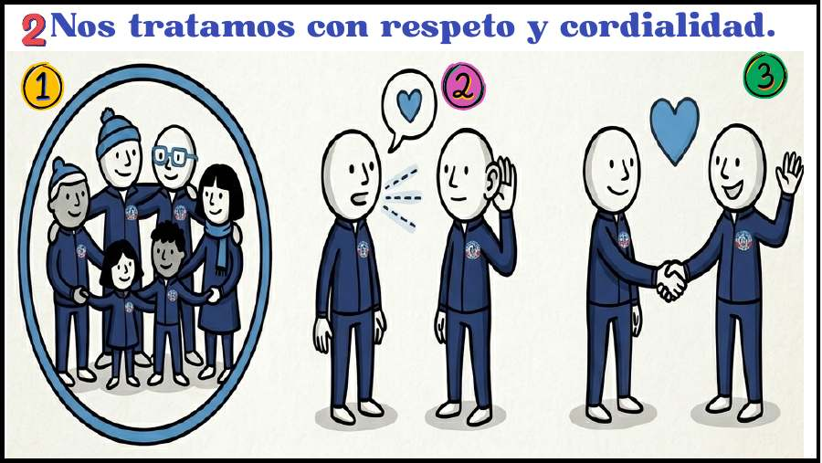
3. Mantenemos una comunicación asertiva.
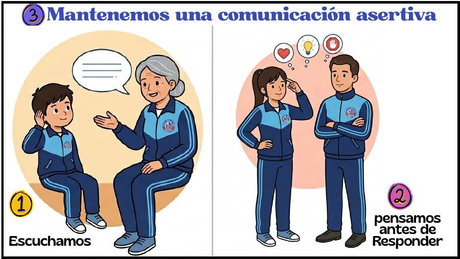
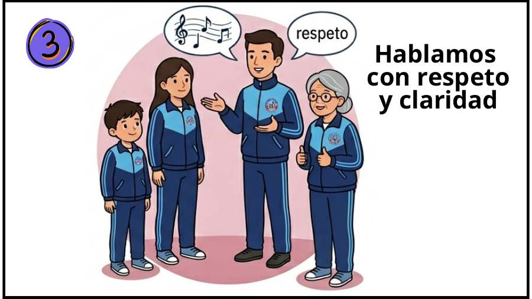
4. Cuidamos la imagen institucional.
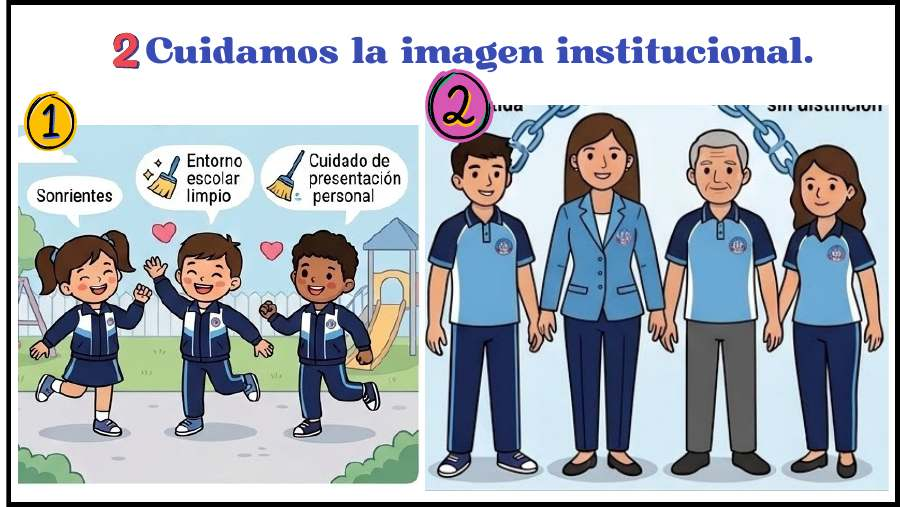
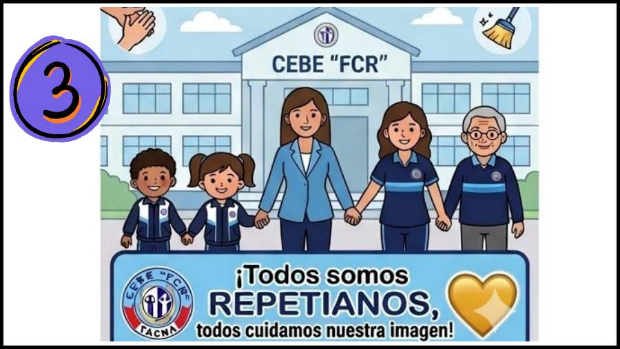
5. Regulamos el uso del celular.
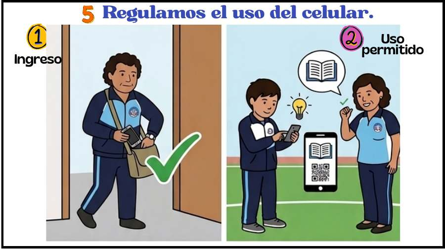
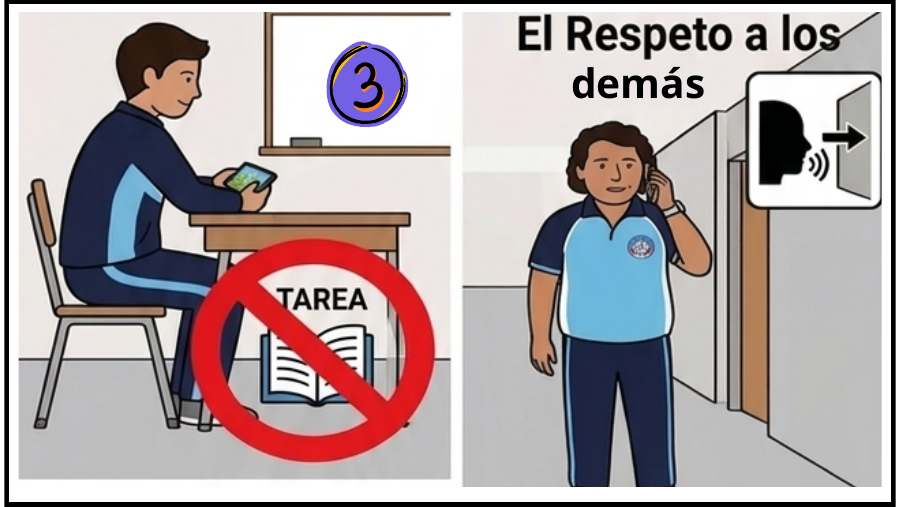
6. Participamos con respeto, tolerancia y compromiso en todas las reuniones, sean presenciales o virtuales.
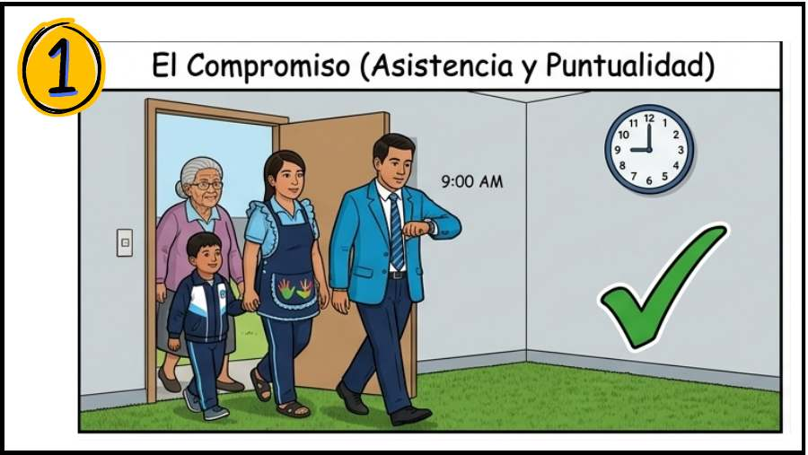
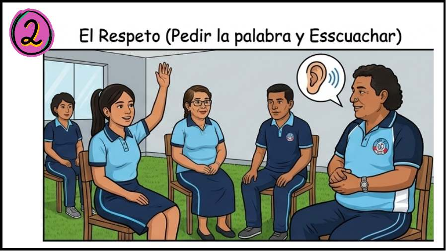
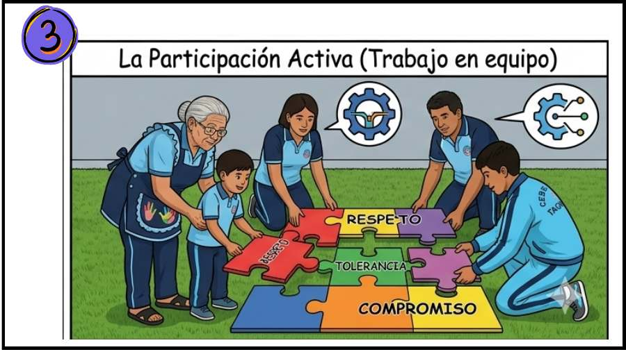
7. Somos respetuosos, empáticos y solidarios con todos los miembros de la comunidad educativa.
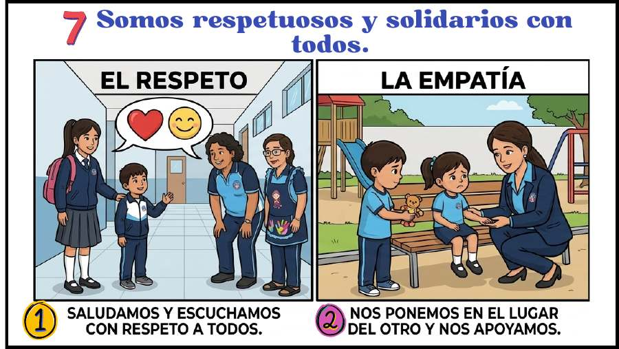
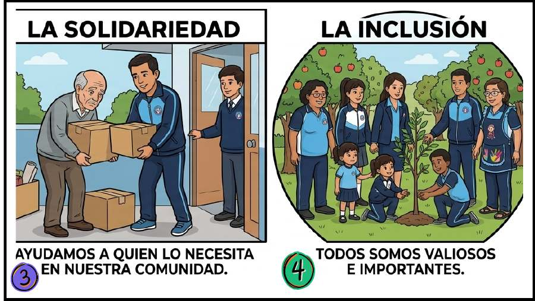
8. Fomentamos el orden en la puerta del colegio a la hora de ingreso y salida.
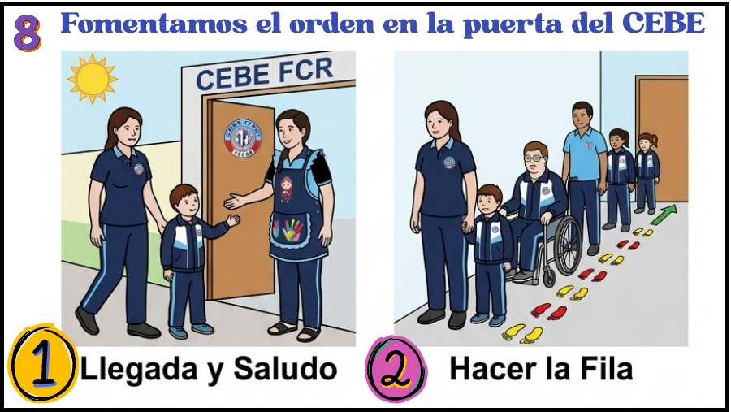
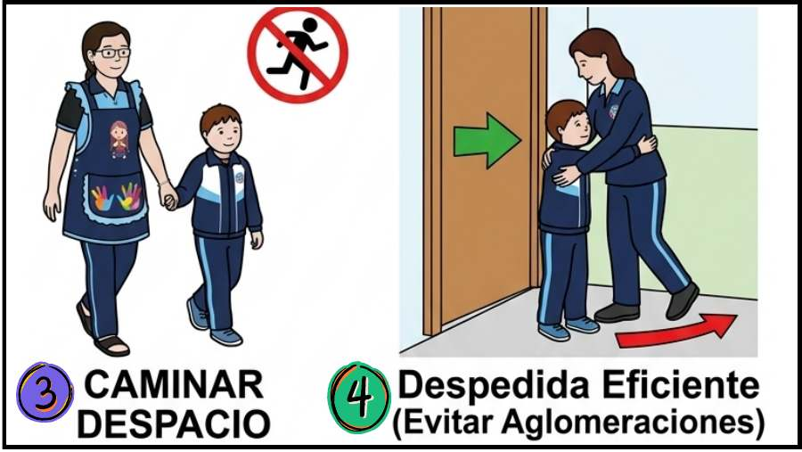
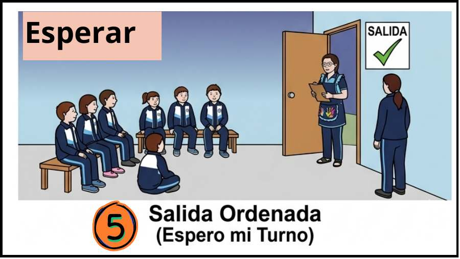
Nuestro equipo
Quiénes trabajan en el CEBE, cómo se organizan y qué hace cada uno.
Organigrama y directorioEquipo interdisciplinarioFunciones del personal
Organigrama y directorio
Dirección
Directora: Mg. Patricia Roxana Bravo Cornejo
Órganos y equipos
CONEI, Comité Pedagógico, Equipo SAANEE, APAFA y tres comités de gestión: condiciones operativas, pedagógica y del bienestar.
Organización
Docentes de aula: 19
Inicial: 3 secciones
Primaria: 15 secciones
Auxiliares de educación: 9
Personal administrativo: 10
Estudiantes: 136
Equipo interdisciplinario
Es el grupo de profesionales no docentes del CEBE (psicología, trabajo social y terapia) que trabajan junto con las docentes para que cada estudiante aprenda con los apoyos que necesita. Comparten sus saberes entre sí y con las docentes: es lo que llamamos enfoque transdisciplinario.
Cómo trabajan
Junto a la docente
Apoyan en la planificación del aula, en la evaluación de los estudiantes y en el desarrollo de las unidades de aprendizaje y los talleres. La docente del aula siempre está presente y guía el trabajo pedagógico.
Con las familias
Participan en los talleres para familias, en las entrevistas personales y en las visitas domiciliarias que se coordinan con la docente.
Mirada pedagógica
Su objetivo es el aprendizaje y el bienestar de cada estudiante. Apoyan dentro del aula y en los talleres, no brindan terapias individuales ni sacan al estudiante de su grupo.
Quiénes lo integran
Psicología
Participa en la evaluación y en el plan educativo de cada estudiante, acompaña y capacita a las docentes en convivencia, habilidades sociales y manejo positivo de la conducta, y brinda soporte socioemocional a estudiantes, familias y personal.
Trabajo social
Conoce y acompaña la situación social y familiar de los estudiantes, orienta a las familias sobre beneficios y servicios de apoyo, realiza visitas domiciliarias y da seguimiento a la asistencia para prevenir el abandono escolar.
Terapia física
Colabora en actividades de psicomotricidad, educación física, arte, habilidades para la vida diaria y talleres productivos, y capacita a las docentes en estrategias de postura, movimiento y uso de las manos.
Cómo se integra el equipo
Los profesionales trabajan alrededor de los estudiantes y de sus docentes. Con borde rojo, los perfiles con los que cuenta el CEBE.
Evolución del enfoque de trabajo
Multidisciplinario
Varias disciplinas trabajan por separado: cada profesional se centra en sus propios objetivos y métodos, con poca o ninguna colaboración.
Interdisciplinario
Las disciplinas se relacionan y cooperan: cada profesional aporta desde su especialidad para lograr un objetivo compartido.
Transdisciplinario
Cada profesional reconoce los límites de su disciplina y comparte sus saberes con los demás y con la docente, quien tiene la relación más cercana con el estudiante.
Formas de acompañar a las docentes
En las unidades de aprendizaje y en los talleres, el equipo puede intervenir de tres maneras.
Apoya a la docente
La docente desarrolla la unidad de aprendizaje o el taller, y el profesional del equipo la apoya durante la actividad.
Corresponsabilidad
La docente y el profesional comparten la conducción de la actividad (docencia compartida).
Asume el liderazgo
El profesional lidera la actividad de su especialidad, con la docente presente en el aula.
Funciones del equipo
Funciones generales
- Apoyar a las docentes en la planificación curricular del aula, anual y de corto plazo.
- Apoyar la planificación de la primera unidad de aprendizaje (primeras cinco semanas): semana de adaptación, evaluación psicopedagógica, informe psicopedagógico y Plan Educativo Personalizado (PEP).
- Participar en la evaluación de entrada y en las evaluaciones de progreso, apoyando los informes de progreso y su entrega a las familias en entrevistas.
- Participar en la planificación, el desarrollo y la evaluación de las unidades de aprendizaje y los talleres.
- Organizar con las docentes el trabajo con las familias: talleres, entrevistas personales y visitas domiciliarias.
Psicología
- Organizar espacios de formación y grupos de interaprendizaje para docentes y personal.
- Acompañar y capacitar a las docentes en convivencia, habilidades sociales, resolución de conflictos, disciplina positiva y autorregulación.
- Acompañar y orientar a las familias para fortalecer sus competencias parentales y su participación.
- Brindar soporte socioemocional a estudiantes, familias y personal del CEBE.
Trabajo social
- Conocer e intervenir en situaciones sociales y familiares de los estudiantes: diagnósticos familiares y visitas domiciliarias, sobre todo en casos urgentes como inasistencia o vulneración de derechos.
- Derivar a redes de apoyo locales cuando sea necesario.
- Orientar a las familias sobre programas, subsidios, pensiones, seguros y certificados relacionados con la discapacidad.
- Dar seguimiento a la asistencia de los estudiantes, en especial de quienes están en mayor vulnerabilidad, para prevenir el abandono escolar.
Terapia física y ocupacional
- Colaborar en la planificación de unidades y talleres, con énfasis en psicomotricidad, educación física, arte y cultura, habilidades para la vida diaria y talleres productivos del TVA.
- Acompañar a las docentes en el Proyecto de Vida y en las actividades de la etapa de TVA.
- Capacitar y acompañar a las docentes en estrategias de sensorialidad, postura, movimiento y uso de las manos.
Funciones del personal
Funciones del docente
- Participar en la elaboración, formulación e implementación de los instrumentos de gestión, así como en la formulación y desarrollo de proyectos de innovación e investigación educativa.
- Brindar una atención educativa integral y adecuada a las características de los estudiantes que permita promover el desarrollo de su autonomía y su plena inclusión social.
- Aplicar la EPP desde un enfoque transdisciplinario, analizar los resultados de esta, elaborar el informe psicopedagógico e incluir este documento en la carpeta individual del estudiante. Además, debe realizar la evaluación formativa, entendida como un proceso permanente y sistemático que permite conocer y valorar los procesos de aprendizaje y los niveles de avance en el desarrollo de las competencias.
- Planificar los aprendizajes de los estudiantes a su cargo y precisar las demandas educativas específicas de cada uno de ellos en su PEP a partir de los resultados obtenidos de la evaluación de entrada.
- Planificar, en el marco del currículo vigente, las actividades de aprendizaje de los estudiantes a su cargo desde el DUA y considerando sus fortalezas, las barreras que afrontan y los apoyos que requieren.
- Emplear metodologías y estrategias de aprendizaje adecuadas y diferenciadas para cada estudiante según se requiera y con el fin de favorecer el desarrollo de competencias y el logro de aprendizajes de calidad.
- Seleccionar, elaborar (o adaptar) y utilizar materiales y recursos educativos acordes a las características y necesidades de aprendizaje de los estudiantes a su cargo, priorizando aquellos que cumplan con criterios de accesibilidad universal y diseño para todos.
- Apoyar, acompañar, asesorar e informar a las familias para asegurar su participación y empoderamiento, así como para dar continuidad al desarrollo de competencias y consolidar los logros de aprendizaje, todo ello en el contexto o entorno familiar y social.
- Participar en procesos de formación y capacitación continua y en grupos de interaprendizaje con el objetivo de actualizar sus conocimientos y mejorar la calidad de la atención educativa que brindan los CEBE a sus estudiantes.
- Participar en la planificación, implementación y evaluación de las actividades programadas en los planes de tutoría, orientación y convivencia escolar y en los talleres para familias.
- Prevenir, identificar, reportar y/o denunciar (mediante el registro en el portal SíseVe o en el libro de registro de incidencias o mediante llamada a la línea 100 u otros similares) los casos de violencia escolar o familiar o de abuso de cualquier índole que ocurran en el CEBE o que involucren a familias y estudiantes en condición de discapacidad o vulnerabilidad.
- Planificar y realizar visitas domiciliarias, la impresión y envío de materiales y recursos educativos, llamadas telefónicas u otras estrategias que permitan la atención de los estudiantes y de sus familias cuando no puedan asistir de manera presencial o semipresencial al servicio educativo.
Funciones del auxiliar de educación
A. Funciones generales
- Participar en coordinación con el profesor en la elaboración, el desarrollo y evaluación del plan de aula.
- Apoyar a los profesores en el desarrollo de las actividades técnico pedagógicas.
- Colaborar en el desarrollo de las actividades destinadas a lograr la autonomía personal del estudiante.
- Participar en todas las acciones del cuidado diario de los estudiantes a su cargo que coadyuven a una atención integral de los mismos.
- Realizar alguna otra función que asigne la dirección inherente al cargo y que sea para beneficio de los estudiantes o de la institución.
- Dependen funcionalmente del director.
B. Funciones específicas
- Participar en la elaboración, formulación e implementación de los instrumentos de gestión.
- Cooperar con el docente y con los profesionales no docentes en las acciones educativas y pedagógicas dentro del aula y en otros espacios educativos (servicios higiénicos, patio, comedor, sala de psicomotricidad, espacios educativos externos al CEBE, entre otros).
- Participar en la elaboración o adaptación de materiales y recursos educativos, así como en la organización, aseo y ambientación del aula y de otros espacios educativos.
- Cooperar en las acciones para el desarrollo de la autonomía personal, la inclusión social y familiar, y la formación ocupacional de los estudiantes.
- Propiciar un clima de respeto entre familias, directivos, docentes, profesionales no docentes y estudiantes, considerando el liderazgo del docente en los procesos de aprendizaje, la confidencialidad de la información recibida y los conductos adecuados de comunicación.
- Fortalecer la adquisición de hábitos y rutinas positivas, así como el buen trato entre los estudiantes.
- Contribuir con el orden, conservación y mantenimiento del local educativo, de las aulas y de otros espacios educativos (servicios higiénicos, comedor, sala de psicomotricidad, entre otros), así como del mobiliario, de los materiales y de los recursos educativos.
- Participar en las prácticas de autoevaluación personal y de evaluación institucional.
- Otras funciones afines a su cargo y asignadas por el docente responsable del aula.
C. Otras funciones específicas
- Promover el orden en las formaciones y actividades cívicas dentro o fuera de la IE, en coordinación con los profesores.
- Efectuar recorridos periódicos en los diversos ambientes de la IE a fin de velar por el cumplimiento de las normas de convivencia escolar y de ser necesario fuera de la IE.
- En ausencia del profesor, el auxiliar de educación permanece en el aula asignada cumpliendo las funciones inherentes a su cargo de auxiliar de educación.
- Promover el orden y la disciplina en el aula durante la ausencia del profesor.
- Llevar el registro diario de asistencia de los estudiantes, así como de las incidencias de incumplimiento de las normas de convivencia escolar; y hacer seguimiento de las recomendaciones, dando cuenta al docente tutor correspondiente en temas vinculados a violencia, discriminación u otros comportamientos de riesgo en la IE.
- En caso sea necesario desarrollar estrategias de diálogo permanente con los estudiantes, profesores y los padres de familia en coordinación con los profesores tutores.
- Monitorear el ingreso y salida de estudiantes de la IE, faltas, tardanzas, permisos y el registro de la agenda escolar.
- Monitorear el ingreso y salida de los estudiantes a las aulas, talleres, laboratorios y otros espacios de aprendizaje de acuerdo con la programación.
- Brindar auxilio a los estudiantes en casos de emergencia.
- Apoyar en las actividades tutoriales y de consejería estudiantil programadas por el tutor y la IE.
Niveles y servicios
| Nivel y etapa | Aulas y grados | Edades sugeridas | Etapas de desarrollo |
|---|---|---|---|
| Inicial | Inicial 3 años | 3 años | Infancia temprana o primera infancia |
| Inicial 4 años | 4 años | ||
| Inicial 5 años | 5 años | ||
| Primaria y TVA | Primer Grado | 6 y 7 años | Niñez media o segunda infancia |
| Segundo Grado | 8 y 9 años | ||
| Tercer Grado | 10 y 11 años | ||
| Cuarto Grado · TVA básico | 12, 13 y 14 años | Adolescencia | |
| Quinto Grado · TVA intermedio | 15, 16 y 17 años | ||
| Sexto Grado · TVA avanzado | 18, 19 y 20 años |
Tránsito a la Vida Adulta (TVA)
Desde cuarto grado, además de las competencias del currículo, se trabajan talleres para lograr la mayor autonomía e inclusión familiar, social y laboral posible. Cada etapa dura 3 años y en ellas se construye el Proyecto de Vida de cada estudiante, junto con su familia. Se siguen fortaleciendo la comunicación, las habilidades sociopersonales y las cognitivas.
TVA básico
Autonomía personal. Identidad personal, autocuidado (aseo, vestido, sueño y descanso) y hábitos de alimentación. Se elabora el Proyecto de Vida.
TVA intermedio
Autonomía familiar y social. Habilidades sociales, vida en el hogar, transporte y comunicación, y ocio y tiempo libre. Se reajusta el Proyecto de Vida.
TVA avanzado
Autonomía laboral. Orientación laboral, habilidades ocupacionales y manejo del dinero, con talleres productivos. Se concreta el Proyecto de Vida con opciones de trabajo o emprendimiento.
Talleres
Talleres internos
Los talleres se realizan dentro del CEBE y están a cargo de las docentes y los docentes de la institución.
Nuestros servicios
PRITE
Programa de Intervención Temprana para niñas y niños menores de 3 años con discapacidad o en riesgo de adquirirla. La atención oportuna ayuda a prevenir retrasos en su desarrollo.
Código modular: 1801489
CEBE
Centro de Educación Básica Especial para estudiantes con discapacidad intelectual severa que requieren apoyos permanentes y especializados.
SAANEE
Servicio de Apoyo y Asesoramiento para la Atención de Necesidades Educativas Especiales. Asesora a instituciones de Educación Básica Regular, Alternativa y Técnico-Productiva para que incluyan a estudiantes con discapacidad, TEA o altas capacidades.
Evaluación y planificación
Evaluación Psicopedagógica (EPP)
Proceso para conocer de forma integral a cada estudiante: sus fortalezas, las barreras que enfrenta, los apoyos que necesita y su nivel de desarrollo de competencias.
Plan Educativo Personalizado (PEP)
Documento flexible elaborado por los docentes que da una respuesta educativa individual, con adaptaciones curriculares según las fortalezas y los apoyos que cada estudiante necesita.
Equipo y servicios de apoyo
SAANEE, psicología, trabajo social y terapia física. Ver más
Orientación a familias
Para información sobre matrícula, comuníquese con secretaría, de 8:00 a. m. a 2:00 p. m., al 052-285707.
Noticias y actividades
Novedades, actividades y logros del CEBE.
Comunicados y avisos
Calendario
Fechas importantes del año escolar 2026.
Próximas actividades
Calendario cívico 2026
Documentos y recursos
Galería institucional
Las fotografías y videos de estudiantes se publican solo con autorización y cuidando su privacidad.
Preguntas frecuentes
Respuestas rápidas para las familias.
Contáctenos
Escríbanos
Su consulta llegará al CEBE y le responderemos a la brevedad.
Datos institucionales
- Av. Industrial S/N y calle Carolina Repetti S/N, Pocollay, Tacna, Perú
- 052-285707
- cebe.repetti.2020@gmail.com
- Secretaría: 8:00 a. m. a 2:00 p. m.
- Ingreso: Primaria 8:00 a. m. · Inicial 8:30 a. m.
- Salida: 12:45 a 1:00 p. m.
¿Cómo solicito información?
Comuníquese con secretaría, de 8:00 a. m. a 2:00 p. m., al 052-285707 o escriba al correo institucional.
Mesa de Partes Virtual
Una forma de presentar solicitudes al CEBE sin ir a la institución. Módulo futuro · no operativo
Vista previa del formulario
Es solo una demostración: no envía ni guarda información. Por favor, no escribas datos reales.
Consulta el seguimiento
Aquí podrás ver el estado de tu solicitud con el código que recibas.
Mientras tanto, escríbenos o llámanos desde Contáctenos.
Acceso de administración
El panel (noticias, avisos, documentos, galería, información y usuarios con roles) requiere backend, base de datos y autenticación real con autorización en el servidor. Esta página no simula un inicio de sesión.
Privacidad
Cómo cuidamos tus datos en este sitio.
Qué datos recogemos
Este sitio no te pide datos personales para navegar. Si escribes desde el formulario de Contáctenos, tu nombre, correo, celular (si lo indicas) y mensaje se registran en un formulario de Google del CEBE (Google Forms), al que solo accede el personal autorizado, y se usan solo para responder tu consulta. La Mesa de Partes todavía es una demostración y no envía ni guarda información.
Qué guarda tu navegador
Solo tus preferencias de la página (modo claro u oscuro, tamaño de texto y alto contraste), en tu propio dispositivo. No usamos cookies de publicidad ni de seguimiento.
Fotos y videos
Las imágenes de estudiantes se publican únicamente con la autorización de sus familias.
Enlaces a otros sitios
Algunos enlaces llevan a sitios externos, como Google Maps, Facebook o medios de prensa, que tienen sus propias políticas de privacidad.
Tus derechos
La Ley N.° 29733, de Protección de Datos Personales, te permite pedir el acceso, la rectificación o la eliminación de tus datos. Escríbenos a cebe.repetti.2020@gmail.com o llama al 052-285707.
Cambios
Si el sitio empieza a recibir datos, por ejemplo con la Mesa de Partes, esta página se actualizará antes.